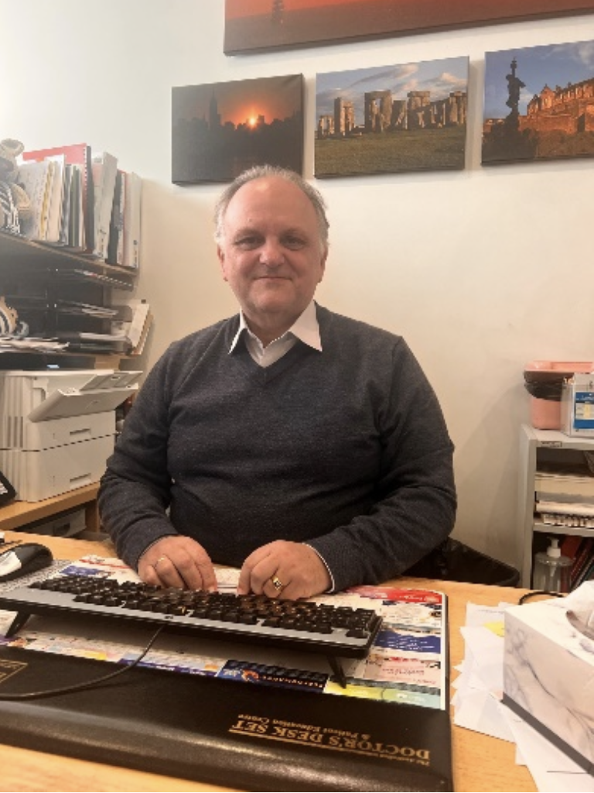
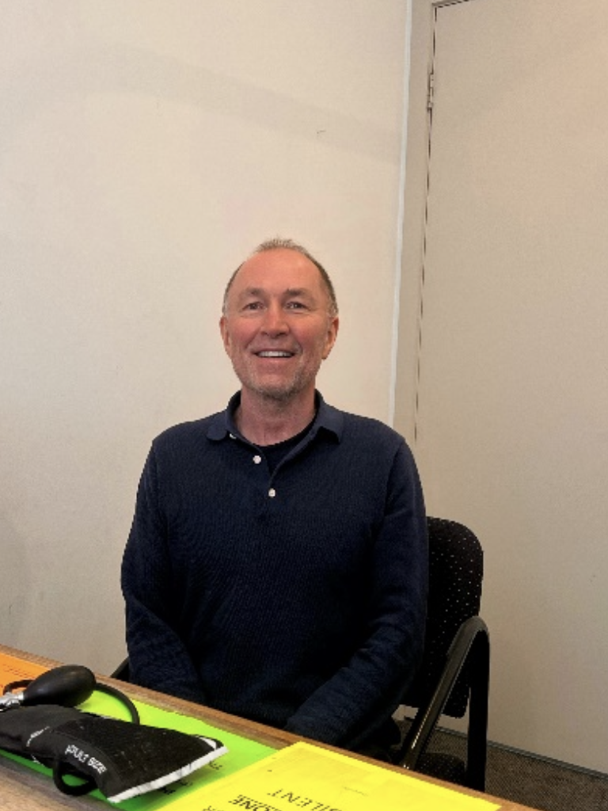
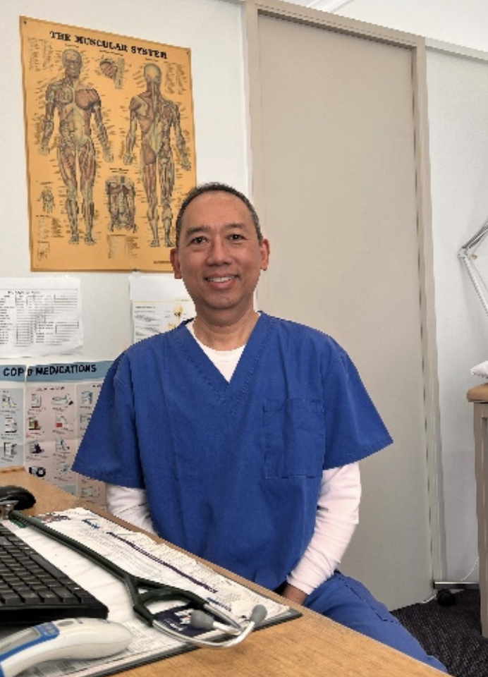
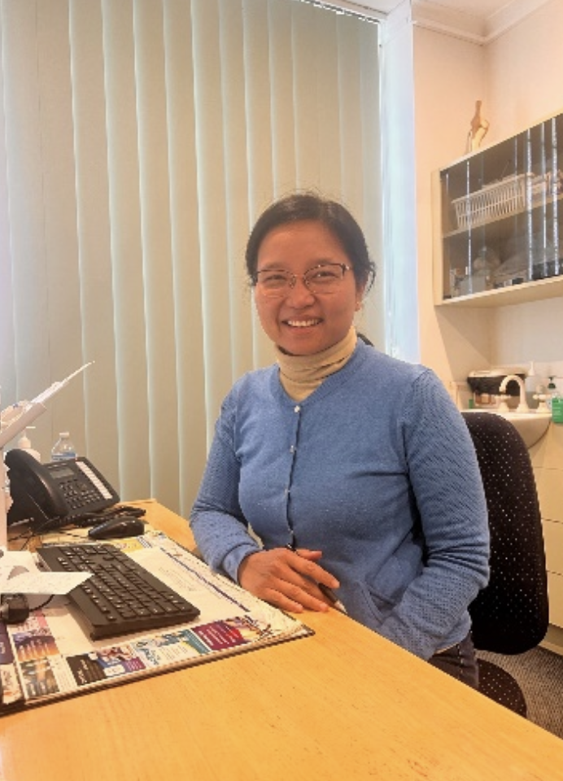
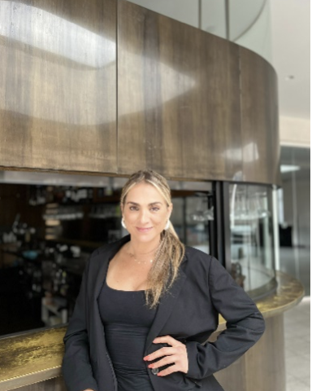

Dr Siky Siapantas
Dr Siapantas graduated in 1980 from Melbourne University. Jumping straight into General practice, he has been servicing the bayside area for over 30 years. His Interests include Skin cancer checks/ Mole removals, General medicine, and family medicine. When not at the clinic Dr Siapantas enjoys photography and travelling

Dr Vitaly Kozlakivsky
Dr Vitaly Kozlakivsky graduated in 1989 from Kyiv Medical University, one of the highest ranked medical schools in the Ukraine. In 2000 Dr Kozlakivsky moved to Australia where he worked in a range of hospitals including Monash Medical Centre in Melbourne and Katherine District Hospital in the Northern territory before landing at Ultra Health Care in 2014. Vitaly has an interest in mens health, pediatrics, and immunology. In his downtime Vitaly enjoys being outdoors as much as possible, riding his bike by the bay and swimming in the ocean.

Dr Kyaw Min
Dr Kyaw Min graduated from Mandalay Medical School in Myanmar in 1988. After graduating Dr Min moved to the UK and worked for the NHS hospital before making his way to Australia in 2016. In Queensland Dr Min worked in both hospitals and general practice before starting with Ultra Health Care in 2019. Min enjoys the field of general practice and when not practicing at the clinic he spends his time with his family.

Dr Khaing Htun
Dr Khaing Htun graduated in 2003 from Mandalay Medical School in Myanmar. Dr Htun went on to complete her diploma in Tropical medicine in Liverpool. Arriving in Australia in 2007, Dr Htun worked is various hospitals throughout Queensland including Charles Hospital and the Royal Children’s Hospital. In 2019 after completing her GP training in Queensland Dr Htun moved to Melbourne to join the team at Ultra Health Care. Dr Htun’s interest include general practice and Women’s health. On weekends Dr Htun enjoys time with her family.

Vicky Gomez
With a reputation built over time and qualifications in Nutrition and Dietetics, Vicky Gomez has a practical approach to health and recognises the humanity and social nature in her clients. Client meal plans are made-to-fit the individual’s unique lifestyle, circumstances, and objectives. Vicky takes a personal investment into understanding what the clients week looks like to better implement a system designed for longevity and sustainability. Furthermore, removing the room for perceived failure.